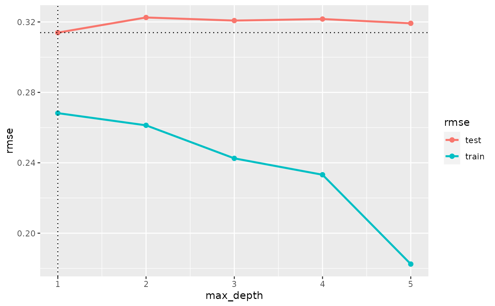

Selection of the best-performing model in a “cv” object
tune.Rdtune() picks the “best” model from a set of models, that is the model with
the smallest test error.
Usage
tune(x, ...)
# S3 method for cv
tune(x, metric = x$metric[1], label = NULL, ...)
# S3 method for multimodel
tune(
x,
nfold = getOption("cv_nfold"),
folds = NULL,
metric = NULL,
label = NULL,
...
)
# S3 method for model
tune(
x,
...,
nfold = getOption("cv_nfold"),
folds = NULL,
metric = NULL,
expand = TRUE,
max_n_model = getOption("expand_max_model"),
label = NULL,
verbose = getOption("cv_verbose")
)
# S3 method for default
tune(
x,
...,
nfold = getOption("cv_nfold"),
folds = NULL,
metric = NULL,
expand = TRUE,
max_n_model = getOption("expand_max_model"),
verbose = getOption("cv_verbose"),
use_original_args = FALSE,
force = FALSE
)Arguments
- x
An object of class “cv”, or any other object that can be transformed to a
cv.- ...
See “Details” and “Methods”.
- metric
A metric (see
metrics), specified either as a character string (name of the metric function), or as a named list of length 1, as inlist(rmse = rmse).metric=NULLselects the default metric, seedefault_metric.- label
A character string: The label of the output model. If
NULL, the selected model's current label is kept.- nfold, folds
Passed to
make_folds().- expand
Logical: Expand the “...” arguments (default) or join them element-wise? If
expand=TRUE, the vectors in “...” will be expanded, the number of models will equal the product of the lengths of the “...” arguments; otherwise, all “...” arguments must have equal lengths, and the number of models will be equal to their common length.- max_n_model
Maximal number of models that will be included. If the number of specified models is greater than
max_n_model, a subset will be selected at random.- verbose
Passed to
cv().- use_original_args, force
Arguments passed to
fit().
Value
All methods return an object of class “model”, except tune.default(),
which returns a fitted model of the same class as its input x.
Details
The core method is tune.cv(x), that selects the model from those included in x having lowest test error
(in terms of the metric).
All other methods will run tune.cv() after some preprocessing steps -- see section “Methods”.
For iteratively fitted models (ifm, classes “fm_xgb” and “fm_glmnet”),
tune(x) without additional arguments returns the model corresponding to the preferred iteration, thus
tuning the parameter nrounds or lambda, respectively.
For other models, tune(x) simply returns x.
Note the different role of the “...” arguments in different methods:
In
tune.cv()andtune.multimodel()they are passed tocv_performance(), allowing specification ofeval_weights;In
tune.model()andtune.default(), they are passed tomultimodel(). This allows expanding a selection of alternative parameterizations, of which that with the smallest test error is finally returned. Selecting the best-performing parameterization thus reduces to one simple line of code:tune(mymodel, hyperparms=candidate_values)
Methods
tune.cv: Executescv_performance(x, ...), finds the model with minimal test error and extracts that model (usingextract_model).tune.multimodel(x, ...)essentially runsx %>% cv %>% tune(...).tune.model(x, ...)essentially runsx %>% multimodel(...) %>% cv %>% tune.tune.default(x, ...)is applied to a fitted modelxand essentially runsx %>% model %>% multimodel(...) %>% cv %>% tune %>% fit.
Examples
options(cv_nfold = 1/3) # accelerates cross-validations, see ?modeltuner_options
# Tune xgboost parameter:
model_xgb <- model("fm_xgb", Sepal.Length~., iris, class = "fm_xgb")
mm_xgb <- multimodel(model_xgb, max_depth = 1:5)
cv_xgb <- cv(mm_xgb)
plot(cv_performance(cv_xgb),
xvar = "max_depth", zeroline = FALSE)

# tune() automatically selects the best-performing model:
tuned1 <- tune(mm_xgb, max_depth = 1:5, label = "tuned_model_1")
tuned1
#> --- A “model” object ---
#> label: tuned_model_1
#> model class: fm_xgb
#> formula: Sepal.Length ~ Sepal.Width + Petal.Length + Petal.Width +
#> Species
#> data: data.frame [150 x 5],
#> input as: ‘data = iris’
#> response_type: continuous
#> call: fm_xgb(formula = Sepal.Length ~ ., data = data,
#> max_depth = 4L)
#> Preferred iteration from cv: iter=17
# \donttest{
# Several tuning steps in a pipe:
tuned2 <- tuned1 |>
tune(learning_rate = c(0.1, 0.3, 1)) |>
tune(min_child_weight = c(5, 10, 20), label = "tuned_model_2")
fit(tuned2, eval = FALSE, use_original_args = TRUE) # extract selected model
#> set_pref_iter(), model ‘tuned_model_2’, modifications made in call:
#> pref_iter=49, nrounds=49, early_stopping_rounds=NULL
#> fm_xgb(formula = Sepal.Length ~ ., data = iris, nrounds = 49L,
#> early_stopping_rounds = NULL, pref_iter = 49L, max_depth = 4L,
#> learning_rate = 0.1, min_child_weight = 10)
# }
# Alternatively test a number of random parameterizations
tuned3 <- tune(tuned1, learning_rate = c(0.1, 0.3, 1),
min_child_weight = c(5, 10, 20),
label = "tuned_model_3")
fit(tuned3, eval = FALSE, use_original_args = TRUE) # extract selected model
#> set_pref_iter(), model ‘tuned_model_3’, modifications made in call:
#> pref_iter=56, nrounds=56, early_stopping_rounds=NULL
#> fm_xgb(formula = Sepal.Length ~ ., data = iris, nrounds = 56L,
#> early_stopping_rounds = NULL, pref_iter = 56L, max_depth = 4L,
#> learning_rate = 0.1, min_child_weight = 5)